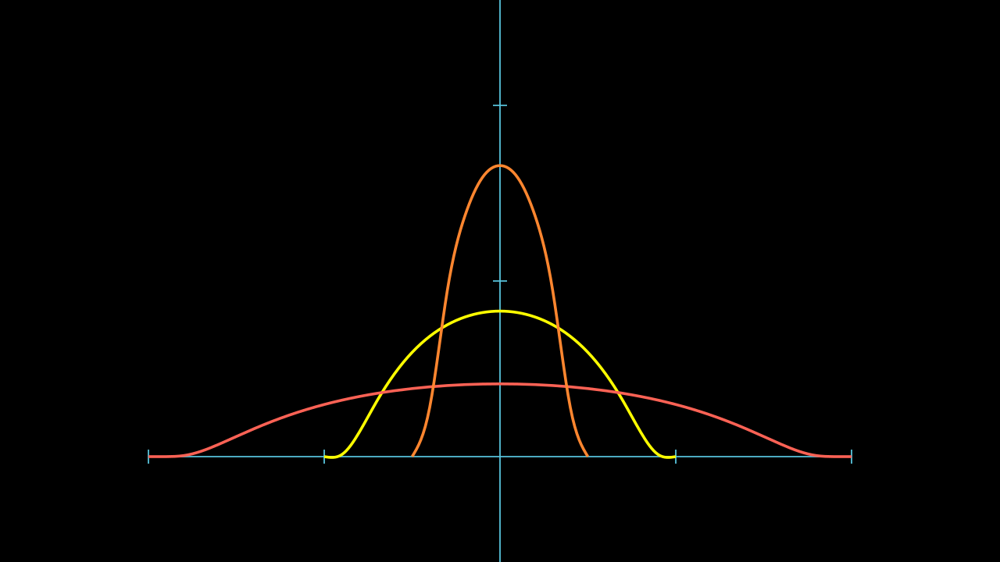
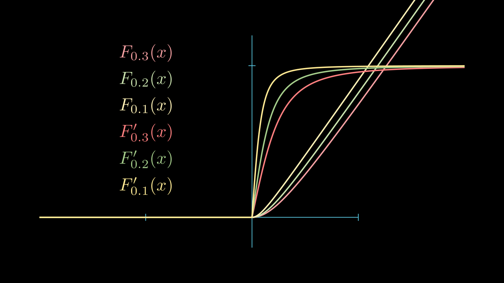

光滑逼近 Approximation
磨光子 Mollifier
我们在 实分析 ，泛函分析 中早已介绍过磨光子，
\[ \eta(x) = \begin{cases}
C e^{\frac{1}{|x|^2-1}} & if \; |x| < 1 \\
0 & if \; |x| \ge 1
\end{cases} \]
\(\eta\) 是光滑的，且 \(\int_{\mathbb{R}^n} \eta = 1\)
对于 \(\epsilon > 0\) ， 令
\[ \eta_\epsilon = \frac{1}{\epsilon^n} \eta(\frac{x}{\epsilon}) \]
我们有 \( \eta_\epsilon \in C^\infty\) ，
\[ \int_{\mathbb{R}^n} \eta_\epsilon = 1 \quad \text{supp} (\eta_\epsilon) \subset B(0, \epsilon) \]

Urysohn 引理
令 \(U, V\) 是 \(\mathbb{R}^n\) 中的开集，\(V \subset\subset U\)。
则存在一个光滑函数 \(\zeta\) 使得 \(\zeta(x) \equiv 1, x\in V\)，\(\zeta(x) = 0, x \text{ near } U\)
证明
因为 \(\overline{V} \subset \Omega\)，故存在 \(\epsilon_0 > 0\) ，使得 \(\text{dist}(\overline{V}, \partial\Omega) > 2\epsilon_0\)。
那么令 \(W = \{x: \text{dist}(x, \overline{V}) < \epsilon_0 \}\)，则 \(W\) 是一个开集，且 \(V \subset\subset W \subset\subset \Omega\)。
令 \(\eta(x)\) 是 磨光函数，\(\eta_\epsilon(x) = \frac{1}{\epsilon^n} \eta(\frac{x}{\epsilon})\) ， \(\int_\Omega \eta_\epsilon = 1\)
那么令 \(0 < \epsilon < \epsilon_0\)， \(\zeta=\eta_\epsilon * \chi_W \)， \(\zeta\) 是一个光滑函数，且 \(0 \le \zeta(x) \le 1, x\in \Omega\)
当 \(x\in V\) 时，\(B(x, \epsilon) \subset W\)
\[ \zeta(x) = \int_{B(0, \epsilon)} \chi_W (x-y) \eta_\epsilon(y) dy = \int_{B(x, \epsilon)} \chi_W (y) \eta_\epsilon(x-y) dy = \int_{B(0, \epsilon)} 1 \eta_\epsilon(y) dy = 1 \]
当 \(x\to \partial \Omega\) 时，\(\text{dist}(x, \overline{V}) > 2\epsilon\)， \(B(x, \epsilon) \subset W^c\)，同理得 \(\zeta(x) = 0\)
单位分解定理 Partition of Unity
有限版本
设 \(U\) 有界且 \(U \subset\subset \bigcup_{i=1}^N V_i\)， 其中 \(V_i\) 是开集， 那么存在 \(\zeta_i \in C^\infty, i=1, \dots, N\) 使得
\[ \begin{cases}
0 \le \zeta_i \le 1, \quad \text{supp}(\zeta_i) \subset V_i \quad (i=1, \dots, N) \\
\sum_{i=1}^N \zeta_i(x) = 1, \quad x \in U
\end{cases} \]
证明
因为 \(U \subset\subset \bigcup_{i=1}^N V_i\)，其中 \(V_i\) 是开集，
我们可以找到 \(W_i \subset\subset V_i\)，
使得 \(U \subset\subset \bigcup_{i=1}^N W_i \subset\subset \bigcup_{i=1}^N V_i\)。
（由于 \(U \in \mathbb{R}^n\) 有界，所以 \(\bar{U}\) 是紧的，每个点都有开集 \(U_x \subset\subset V_i\) 对于某个 \(i\)，\(U_x\) 是一个开覆盖，所以有有限开覆盖 \(U \subset\subset \bigcup_{i=1}^M U_{x_i}\)，将他们分组到各自属于的 \(V_i\)，令每一组的并为 \(W_i\)，则 \(U \subset\subset \bigcup_{i=1}^N W_i\)，且 \(W_i \subset\subset V_i\) ）
对于每个 \(W_i, V_i, i=1, \dots, N\)，存在 \(\phi_i \in C^\infty\) 使得
\[ \phi_i(x) = \begin{cases} 1, \quad x \in W_i \\ 0, \quad x \in V_i^c \end{cases} \]
即 \(\text{supp}(\phi_i) \subset V_i\)，
令
\[ \phi_0(x) = \begin{cases} 1, \quad x \in U \\ 0, \quad x \in \left(\bigcup_{i=1}^N W_i\right)^c \end{cases} \]
那么，令
\[ \zeta_i = \frac{\phi_i}{\sum_{i=1}^N \phi_i + 1-\phi_0}, \quad i=1, \dots, N \]
那么，\(\text{supp}(\sum_{i=1}^N \phi_i + 1-\phi_0) \supset \bigcup_{i=1}^N W_i + \left(\bigcup_{i=1}^N W_i\right)^c \supset \bigcup_{i=1}^N V_i\)，因此 \(\zeta_i\) 在 \(V_i\) 上有定义。
又有 \(\text{supp}(\zeta_i) = \text{supp}(\phi_i) \subset V_i\)，
而
\[ \sum_{i=1}^N \zeta_i = \sum_{i=1}^N \frac{\phi_i}{\sum_{i=1}^N \phi_i + 1-\phi_0} = \frac{\sum_{i=1}^N \phi_i}{\sum_{i=1}^N \phi_i + 1-\phi_0} = 1 \quad \text{on } U \]
满足我们需要的条件
我们在以上的定理当中使用了 磨光 的技巧，当然我们依旧更倾向于使用 线性叠加 的思想来理解。
\(\eta_\epsilon * u\) 可以理解成 \(u\) 个光滑的 \(\eta_\epsilon\) 的线性组合，那么他理所当然的应该是光滑的，各阶偏导数也是光滑的。
他还可以理解成 \(\eta_\epsilon\) 个 \(u\) 的线性组合，那么他的各阶偏导数正是 \(u\) 的各阶偏导数的线性组合。
而当\(\epsilon \to 0\) 时，\(\eta_\epsilon * u\) 的组合越是集中，约趋向于 \(u\) 本身。
定义 \(\Omega_\epsilon = \{x\in \Omega | \text{dist}(x, \partial \Omega) > \epsilon\}\).
Local approximation 局部逼近定理
\(\Omega \subseteq \mathbb{R}^n\)，可以无界，
设对于某个 \(1 \le p < \infty\)， 函数 \(u \in W^{k, p}(\Omega)\)，令
\[ u^\epsilon = \eta_\epsilon * u \quad \text{ in } \Omega_\epsilon \]
我们有以下性质：
(i) \(u^\epsilon \in C^\infty(\Omega_\epsilon)\)，且
(ii)
\[ D^\alpha u^\epsilon = D^\alpha \eta_\epsilon * u = \eta_\epsilon * D^\alpha u \]
且当 \(\epsilon \to 0\) 时
\[ u^\epsilon \to u \quad \text{ in } W_{\text{loc}}^{k, p}(\Omega)
\quad \text{i.e.} \quad
\|u^\epsilon - u\|_{W^{k, p}(V)} \to 0 \quad \forall V \subset\subset \Omega \]
Corollary
对于一个函数 \(u \in W^{1, p}(\Omega), 1 \le p \le \infty\)，其中 \(\Omega\) 是连通开集。
如果 \(Du= 0 \text{ a.e. in } \Omega\)，那么存在常数 \(c\)，使得 \(u = c \text{ a.e. in } \Omega\)
证明
根据 局部逼近定理 ，对于任意 \(V \subset\subset \Omega\)，
\(u^\epsilon \in C^{\infty}(V)\).
但是 对于 \(x\in V\)
\[ \begin{align}
Du^\epsilon(x) &= D(\eta_\epsilon * u)(x) \\
&= (\eta_\epsilon * Du)(x) \\
&= \int_{B(x, \epsilon)} \eta_\epsilon(x-y) Du(y) dy \\
&= 0
\end{align} \]
那么 \(u^\epsilon = c(\epsilon) \; \forall x \in V\)
又因为 \(u^\epsilon \to u \in W^{1, p}(V)\)，故 \(u = c \; \text{a.e. in } V\)。
因为 \(V\) 在连通域上是任意的，所以 \(u = c \; \text{a.e. in } \Omega\)
Global approximation 全局逼近定理
设 \(U\) 有界 ，对于某个 \(1 \le p < \infty\)，函数 \(u \in W^{k, p}(U)\)，
那么存在函数列 \(u_m \in C^\infty(U)\cap W^{k, p}(U)\) 使得
\[ u_m \to u \quad \text{in } W^{k, p}(U) \]
Chain Rule
设 \(F:R\to R\) 是 \(C^1\) 的，且 \(F'\) 有界。
设 \(U\) 有界，且对于某个 \(1\le p \le \infty\)， \(u\in W^{1, p}(U)\)，则
\[ v\triangleq F(u) \in W^{1, p}(U),\quad D^\alpha v = F'(u)D^\alpha u \quad |\alpha|=1 \]
证明
因为 \(u\in W^{1, p}(U)\)，所以由 全局逼近定理，
存在函数列 \(u_m \in C^\infty(U)\cap W^{1, p}(U)\) 使得
\[ \|u_m - u\|_{W^{1, p}(U)} \to 0 \]
因为 \(U\) 有界，所以 \(W^{1, p}(U) \subset W^{1, 1}(U)\) ，则
\[ u_m \to u , \quad \nabla u_m \to Du \text{ in } L^q(U) \quad \forall q \in [1, p] \]
那么由 Riesz 定理 存在子列 几乎处处收敛，我们 仍旧 记为 \(u_m\).
\[ u_m \to u , \quad \nabla u_m \to Du \text{ a.e. on } U \]
令 \(v_m = F(u_m)\) ，则 \(v_m \in C^1(U)\) 且由复合函数链式法则
\[ \nabla v_m(x) = \nabla F(u_m(x)) = F'(u_m(x)) \nabla u_m(x) \]
1.
下面我们先证明 \(v \in L^p(U)\)，
事实上由于 \(|F'| \le L\) 有界
\[ |v_m(x)- v(x)| = |F(u_m(x)) - F(u(x))| \le L |u_m(x) - u(x)| \]
特别的
\[ |F(0) - v(x)| = |F(0) - F(u(x))| \le L |u(x)| \]
所以有
\[ \|v\|_{L^p(U)} \le L \|u\|_{L^p(U)} + F(0)|U|^{1/p} \]
得到 \(v \in L^p(U)\)。
以及
\[ \|v_m - v\|_{L^p(U)} \le L \|u_m - u\|_{L^p(U)} \]
即 \(v_m\) 是 \(L^p(U)\) 中的 Cauchy 列，且 \(v_m \to v \text{ in } L^p(U)\)
2.
我们证明 \(v\) 的弱导数存在，事实上对于 \(\phi \in C_c^\infty(U)\)，由 强收敛推弱收敛
\[ \begin{align}
\int_U v \nabla \phi &= \lim_{m\to \infty} \int_U v_m \nabla\phi \\
&= \lim_{m\to \infty} \int_U -\nabla v_m \phi + \int_{\partial U} v_m \phi \nu dS \quad (\phi=0 \text{ on } \partial U) \\
&= \lim_{m\to \infty} -\int_U F'(u_m) \nabla u_m \phi
\end{align} \]
由于 \(u_m(x) \to u(x)，\nabla u_m(x) \to Du(x) \text{ a.e.}\)，以及 \(F'\) 是连续的
\[ F'(u_m(x)) \nabla u_m(x) \to F'(u(x)) D u(x) \text{ a.e. } \]
那么
\[ \begin{align}
\|F'(u_m) \nabla u_m &- F'(u) D u\|_{L^p(U)} \\
&\le \| (F'(u_m)-F'(u)) D u \|_{L^p(U)} + \| F'(u_m) (D u - \nabla u_m) \|_{L^p(U)} \\
&\le \| (F'(u_m)-F'(u)) D u \|_{L^p(U)} + L \| \nabla u_m - D u \|_{L^p(U)} \\
\end{align} \]
但是由于 \( F'(u_m) \to F'(u) \text{ a.e. } \)，以及
\[ |(F'(u_m)-F'(u)) D u| \le 2L|Du| \in L^p(U) \]
那么由 控制收敛定理 ，\(\| (F'(u_m)-F'(u)) D u \|_{L^p(U)} \to 0\)，再加上 \(\| \nabla u_m - D u \|_{L^p(U)} \to 0\)，我们就有
\[ \|F'(u_m) \nabla u_m - F'(u) D u\|_{L^p(U)} \to 0 \]
因此，再次使用 强收敛推弱收敛，我们得到
\[ \begin{align}
\int_U v \nabla \phi &= \lim_{m\to \infty} -\int_U F'(u_m) \nabla u_m \phi
= -\int_U F'(u) D u \phi
\end{align} \]
所以 \(v\) 的弱导数存在，\(Dv = F'(u) D u\).
且 \(\|Dv\|_{L^p(U)} \le L \|Du\|_{L^p(U)}\)，因此 \(v\in W^{1, p}(U)\).
Problems
Question
18
设 \(1 \le p \le \infty\) 并且 \(U\) 有界
a. 如果 \(u \in W^{1,p}(U)\)，那么 \(|u| \in W^{1,p}\)
b. 如果 \(u \in W^{1,p}(U)\)，那么 \(u^+， u^- \in W^{1,p}\)，且
\[ \begin{gather*}
Du^+(x) = \begin{cases}
Du(x), &\text{ a.e. when } u(x) > 0 \\
0, &\text{ a.e. when } u(x) \le 0
\end{cases} \\
Du^-(x) = \begin{cases}
0, &\text{ a.e. when } u(x) \ge 0 \\
-Du(x), &\text{ a.e. when } u(x) < 0
\end{cases}
\end{gather*} \]
c. 如果 \(u \in W^{1,p}(U)\)，那么
\[ Du(x) = 0 \text{ a.e. when } u(x) = 0 \]
令
\[ F_\epsilon(z) \triangleq \begin{cases}
\sqrt{z^2 + \epsilon^2} - \epsilon, &\text{ when } z \ge 0 \\
0 , &\text{ when } z < 0
\end{cases} \]
则 \(F_\epsilon \in C^1(R)\)，
\[ F'_\epsilon(z) \triangleq \begin{cases}
\dfrac{z}{\sqrt{z^2 + \epsilon^2}}, &\text{ when } z \ge 0 \\
0 , &\text{ when } z < 0
\end{cases} \]

a . b .
若 \(u\in W^{1, p}(U)\)，那么根据 Chain Rule，有
\[ D(F_\epsilon(u)) = F'_\epsilon(u) D u, \quad \epsilon > 0 \]
令
\[ F(z) = \lim_{\epsilon \to 0} F_\epsilon(z) = \begin{cases}
z, &\text{ when } z \ge 0 \\
0 , &\text{ when } z < 0
\end{cases} \]
且 这里一定要注意 \(z=0\) 时，极限到底是谁，看图说话
\[\lim_{\epsilon \to 0} F'_\epsilon(z) = \begin{cases}
1, &\text{ when } z > 0 \\
0 , &\text{ when } z \le 0
\end{cases} \]
那么
\[ u^+ = \lim_{\epsilon \to 0} F_\epsilon(u) \]
但由于
\[ F_\epsilon(u) = \sqrt{u^2 + \epsilon^2}-\epsilon \le |u| \in L^p(U) \]
所以由 控制收敛定理
\[ \begin{align}
\int_U u^+ \nabla \phi &= \int_U \lim_{\epsilon \to 0} F_\epsilon(u) \nabla \phi \\
&= \lim_{\epsilon \to 0} \int_U F_\epsilon(u) \nabla \phi \\
&= \lim_{\epsilon \to 0} \int_U F'_\epsilon(u)Du \phi \\
\end{align}\]
但是
\[ F'_\epsilon(u)Du \to Du^+ \text{ a.e. on } U \]
且
\[ |F'_\epsilon(u)Du| \le |Du| \in L^p(U) \]
那么再次由 控制收敛定理，有
\[ \begin{align}
\int_U u^+ \nabla \phi
= \lim_{\epsilon \to 0} \int_U F'_\epsilon(u)Du \phi
= \int_U Du^+ \phi \\
\end{align}\]
这里我们回收了之前提到的注意，\(F'_\epsilon(z)\) 分解的开闭决定了 \(Du^+\) 分界的开闭，
并直接影响到 c 中 \(Du = ? \text{ when } u=0\)
因此
\[ D(u^+) = Du^+ \]
而由于 \(u^- = (-u)^+\)，所以
\[ D(u^-) = Du^- , \quad D(|u|) = D(u^+ + u^-) = Du^+ + Du^- \]
因此 \(u^+, u^-, |u| \in W^{1, p}(U)\).
c.
因为
\[ u = u^+ - u^- \Rightarrow Du = Du^+ - Du^- \]
但是 \(Du^+ = Du^- = 0 \text{ a.e. when } u = 0 \)
因此 \(Du = 0 \text{ a.e. when } u = 0 \)
Question
19
用另一种方式证明，对于 \(u\in H^1(U)\)，\(U\) 有界
\[ Du=0 \text{ a.e. when } u=0 \]
令 \(\phi\) 是有界光滑的非减函数，使得 \(\phi'\) 有界（ Lipschitz 连续 ），并且当 \(|z|\le 1\) 时 \(\phi(z)=z\). 即
\[ \begin{gather*}
\phi(z) \le M \\
\phi'(z) \le L \\
\phi(z) = z \text{ when } |z| \le 1 \\
\end{gather*} \]
考虑
\[ u^\epsilon = \epsilon \phi(u/\epsilon) \]
根据 Chain Rule，有 \(u^\epsilon \in H^1(U)\)，并且
\[ u^\epsilon\le \epsilon M, \qquad
Du^\epsilon = \phi'(u/\epsilon) Du \Rightarrow |Du^\epsilon| \le L |Du| \]
我们说明 \(u^\epsilon \rightharpoonup 0\) 在 \(H^1(U)\) 中弱收敛。
由于 \(H^1(U)\) 是 Hilbert 空间，而 \(C^\infty(U) \cap H^1(U)\) 在 \(H^1(U)\) 中是稠密的，
我们只需要证明对于任意 \(v\in H^1(U)\)，
\[ \langle u^\epsilon, v \rangle = \int_U u^\epsilon v + Du^\epsilon \cdot Dv \to 0 \text{ as } \epsilon \to 0 \]
首先
\[ \int_U u^\epsilon v \le \epsilon M \int_U v \le \epsilon M |U| \|v\|_{L^2(U)} \to 0 \text{ as } \epsilon \to 0 \]
由于 \(D^\alpha v \in L^2(U), |\alpha|=1\)，那么对于任意 \(\delta > 0\)， 存在 \(\psi \in C_c^\infty(U)\) 使得 \(\|D^\alpha v-\psi\|_{L^2(U)} \le \delta \)
\[ \begin{aligned}
\int_U D^\alpha u^\epsilon D^\alpha v &= \int_U D^\alpha u^\epsilon \psi + \int_U Du^\epsilon (D^\alpha v-\psi) \\
&= -\int_U u^\epsilon D^\alpha\psi + \int_U Du^\epsilon (D^\alpha v-\psi) \\
&\le \epsilon M \int_U |D^\alpha \psi| + \|Du^\epsilon\|_{L^2(U)} \|D^\alpha v-\psi\|_{L^2(U)} \\
&\le \epsilon M |U| \|D^\alpha \psi\|_{L^2(U)} + \delta \|Du^\epsilon\|_{L^2(U)} \\
&\le \epsilon M |U| \|D^\alpha \psi\|_{L^2(U)} + \delta L^2 \|Du\|_{L^2(U)} \\
&\to \delta L^2 \|Du\|_{L^2(U)} \text{ as } \epsilon \to 0 \\
\end{aligned} \]
由于上面的不等式对于 \(\forall \delta>0\) 成立，所以
\[ \int_U D u^\epsilon \cdot D v \to 0 \text{ as } \epsilon \to 0 \]
因此 \(u^\epsilon \rightharpoonup 0\) ，
\[ \int_U D u^\epsilon \cdot D u \to 0 \text{ as } \epsilon \to 0 \]
但是
\[ \int_U D u^\epsilon \cdot D u = \int_U \phi'(u/\epsilon) |Du|^2 \ge \int_{\{u=0\}} |Du|^2 \]
这意味着
\[ Du=0 \text{ a.e. when } u=0 \]
{kind=link}
{kind=link}